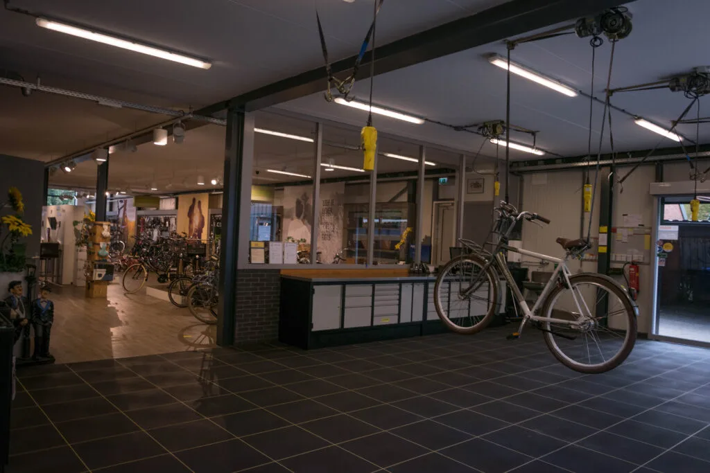

De monteurs van Tieks voeren alle voorkomende reparaties uit. Ook voor onderhoud, servicebeurten, afstelling, e-bike techniek en technische vragen kunt u in de werkplaats terecht.
Uw fiets heeft onderhoud nodig, maar hoe krijgt u hem bij de fietsenmaker? Bij Tieks Tweewielers hoeft u zich daar geen zorgen over te maken.
Wij vinden dat goede service verder gaat dan alleen een vakkundige reparatie. Daarom bieden wij een gratis haal- en brengservice. Kunt u uw fiets niet zelf naar onze werkplaats brengen? Dan komen wij hem ophalen. Onze monteurs zorgen vervolgens voor het benodigde onderhoud of de reparatie. Zodra uw fiets weer klaar is, brengen wij hem bij u terug.
En wat als u uw fiets ondertussen niet kunt missen? Ook daar hebben wij aan gedacht. Wanneer een reparatie langer duurt dan verwacht, kunt u gebruikmaken van een gratis leenfiets, afhankelijk van de beschikbaarheid. Zo blijft u mobiel terwijl wij aan uw eigen fiets werken.
Geen onnodig geregel, geen zorgen over het vervoer en persoonlijke service waarop u kunt vertrouwen.
Dat is de extra aandacht die u van Tieks Tweewielers mag verwachten. Al sinds 1995.
Service maakt het verschil.